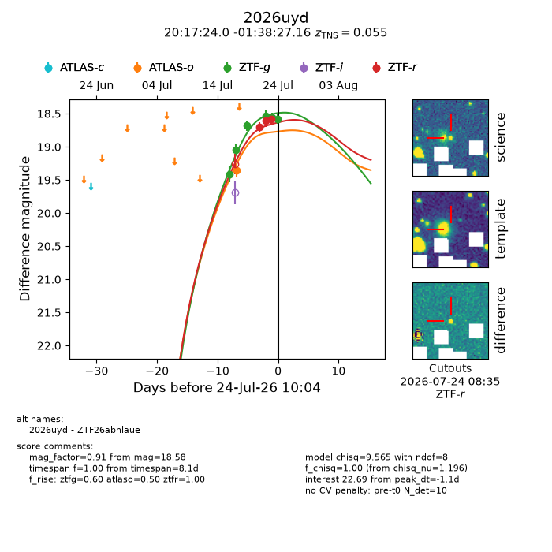
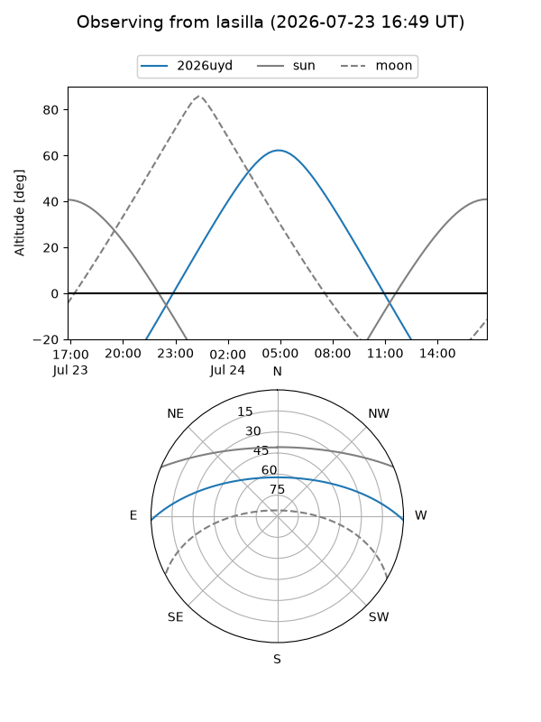
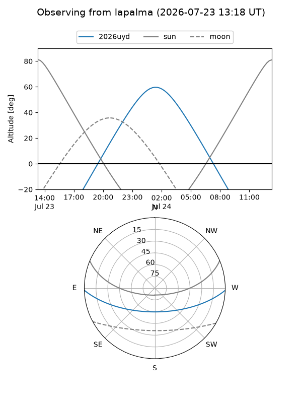
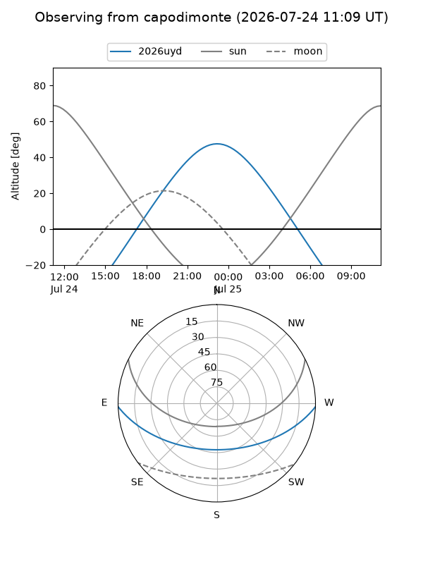
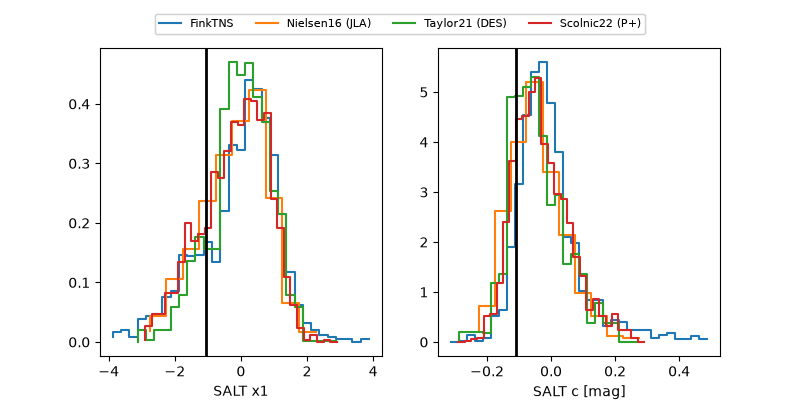

2026uyd
Target 2026uyd at 2026-07-24 10:06
Aliases and brokers:
FINK-ZTF: ztf.fink-portal.org/ZTF26abhlaue
Lasair-ZTF: lasair-ztf.lsst.ac.uk/objects/ZTF26abhlaue
ALeRCE-ZTF: alerce.online/object/ZTF26abhlaue
YSE-PZ: ziggy.ucolick.org/yse/transient_detail/2026uyd
TNS name: wis-tns.org/object/2026uyd
Direct TNS query: direct search
alt names
ZTF26abhlaue (ztf,fink_ztf)
2026uyd (tns,yse)
Coordinates:
equatorial (ra, dec) = 304.3499,-1.64088
equatorial (HMS+DMS) = 20:17:23.98,-01:38:27.16
galactic (l, b) = (41.5819,-19.81392)
Flags:
TNS type: SN II
TNS redshift: 0.0550
peak dt: -1.1
Photometry:
last atlaso=19.36, ztfg=18.58, ztfr=18.58
1 atlaso, 6 ztfg, 3 ztfr detections
Lightcurve

Visibility



Additional plots
